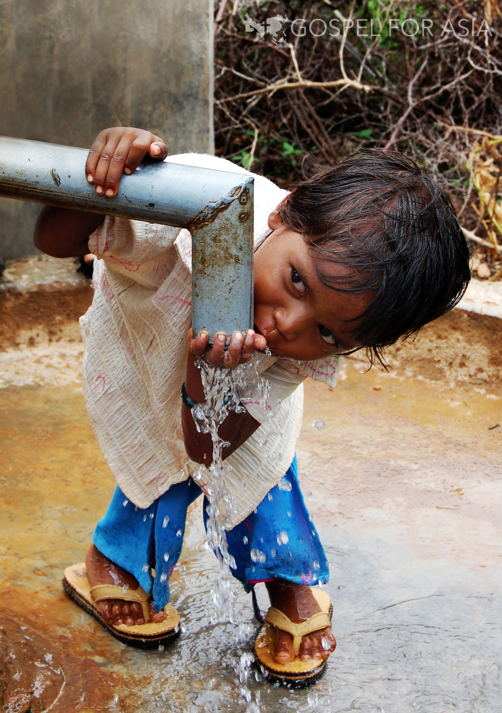
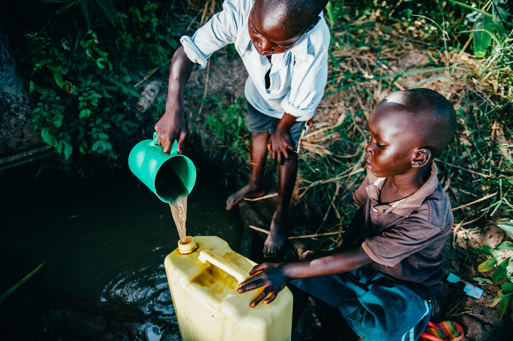
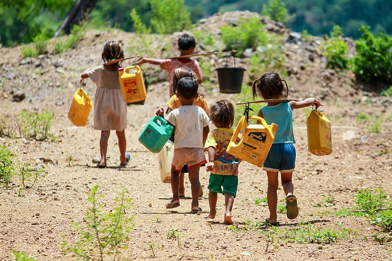
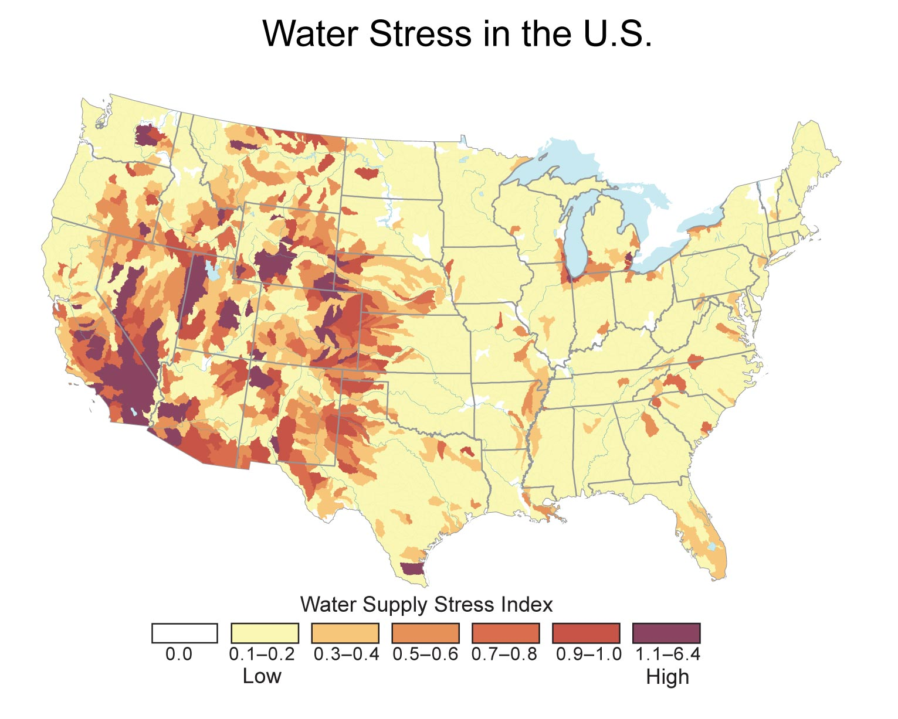
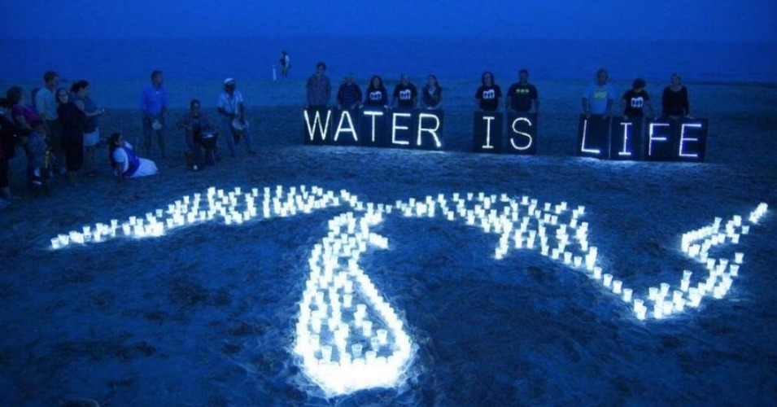
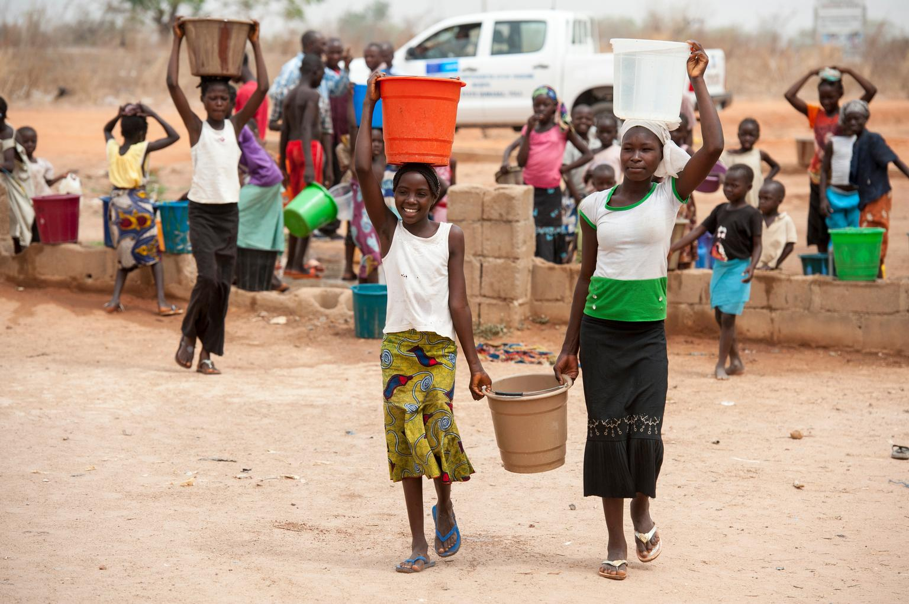
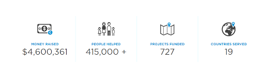
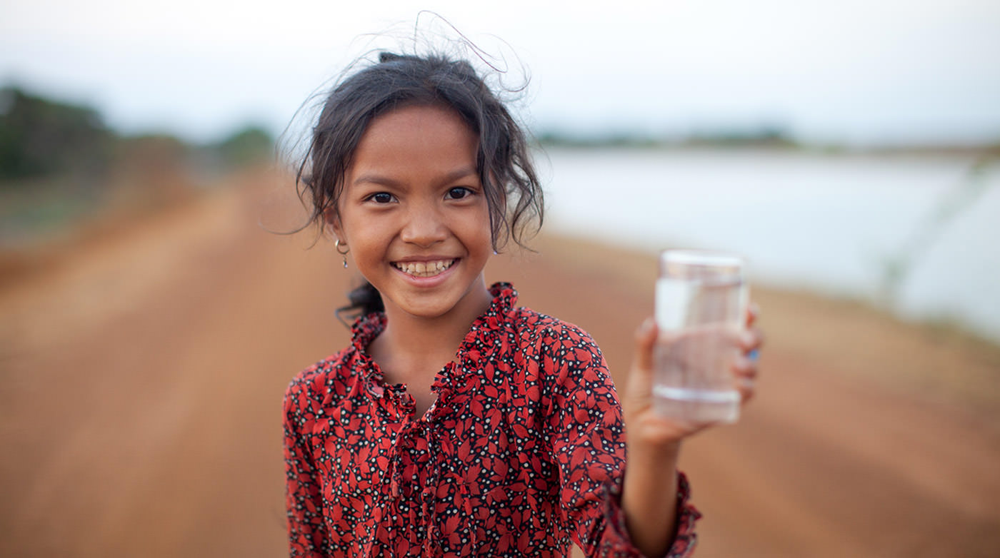

Our Mission
Generosity is a humanitarian organization dedicated to ending the clean water crisis in developing countries, one community at a time. A incredible non-profit organization.
Our Values
Independence
We are a public interest organization that remains independent of corporate and government influence. We are funded fully through our members, individual donors, and foundation grants.
Democracy
We engage and mobilize citizens politically through person-to-person, on-the-ground organizing, educational campaigns and new media technologies. We believe political involvement is critical for holding governments accountable to their constituents and for creating policies that ensure a sustainable world with safe clean water.
Human Rights
Human rights include basic living essentials, like a fresh water source. Although the political will ensure that all people have adequate nutrition, drinking water is lacking. We are part of a growing global movement, fighting this injustice.
Sustainability
We believe in a sustainable future!
One individual taking a stand, ensures access to essential resources for future generations while protecting the quality of our environment.
How to Make a Difference:
- Donate
- Give Monthly
- Your donation goes further in progress, by counting on your givings monthly inorder support them with everyday materials and resources.
- Create a Fundraiser
About
This is a website that explains all about this organization: Generosity.org
     
Clean Water is a Right!
Clean drinking water is a human right, but even in the United States, people have to worry about whether their water is safe to drink, and whether they can afford it. This IS a problem we can solve! We need dedicated funding to keep our water systems up to date and affordable to protect our drinking water for generations to come.